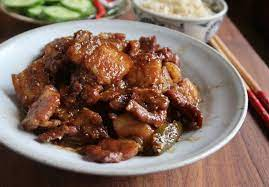
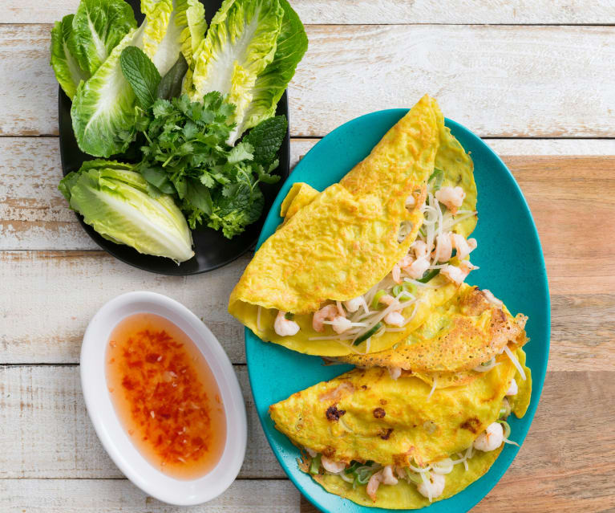

Vietnamese cuisine is nothing new and if you've ever had PHO you know what im talking about! Today we will have a few recipes linked for my personal favorite Vietnamese dishes!
The Following is a list of what I consider to be the top Vietnamese dishes to make!

The so called yellow vietnamese pancake is made with a base yellow pancakeish looking wrap, with beansprouts, shrimp,meat, and fish sauce all over. Usually is wrappd in lettuce, and then dipped in fish sauce for best quality! YUM!
Click Here For Full Recipe